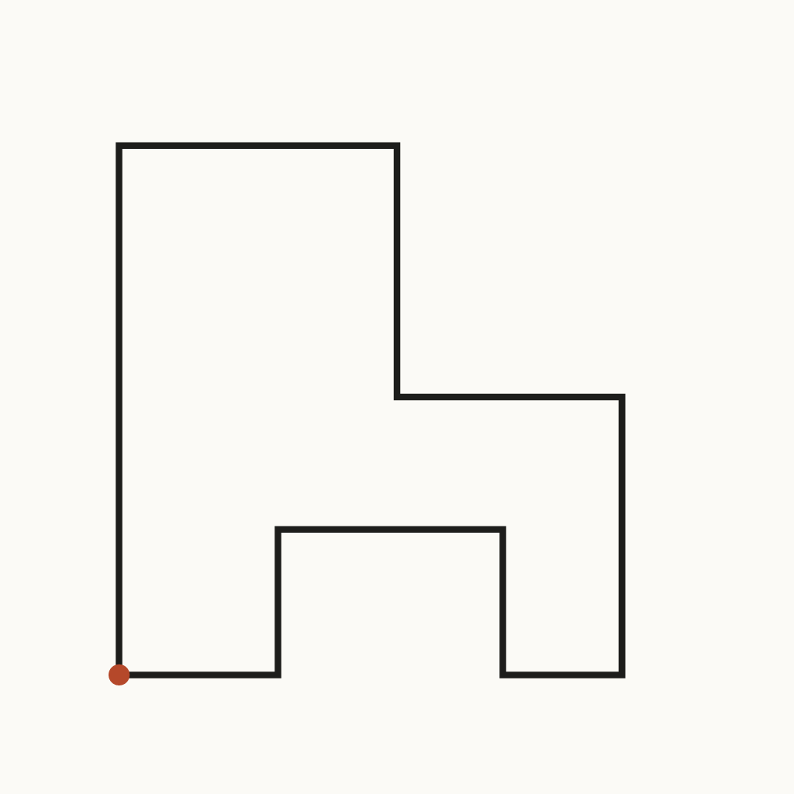
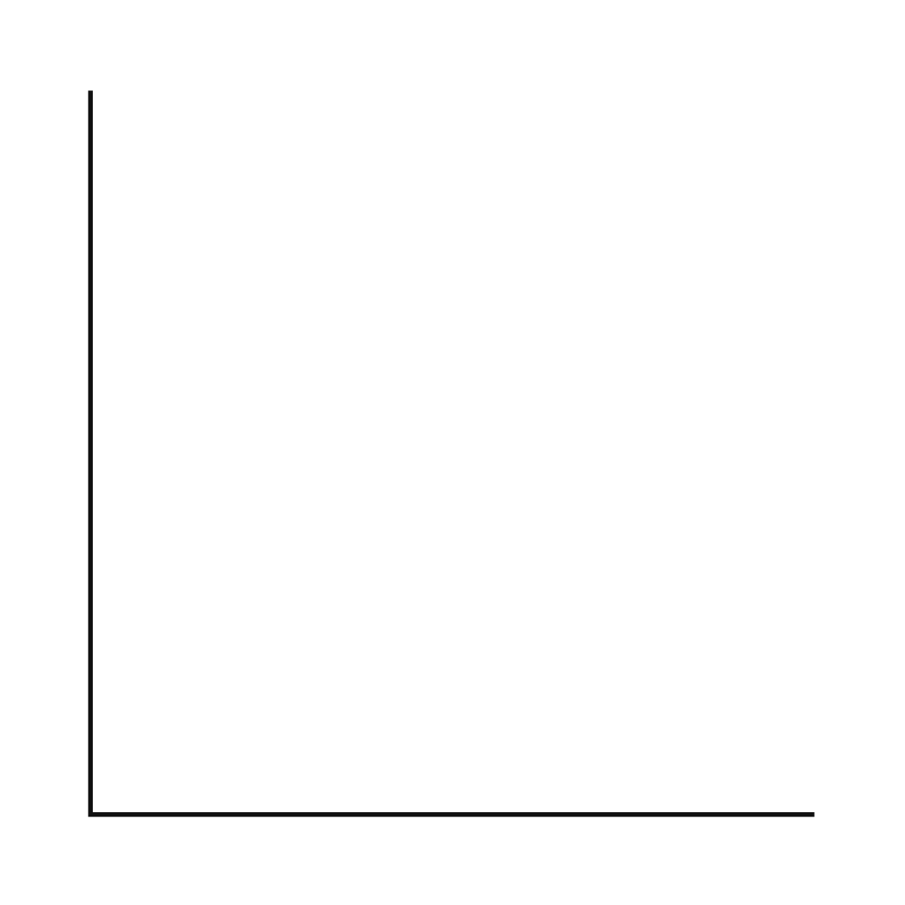
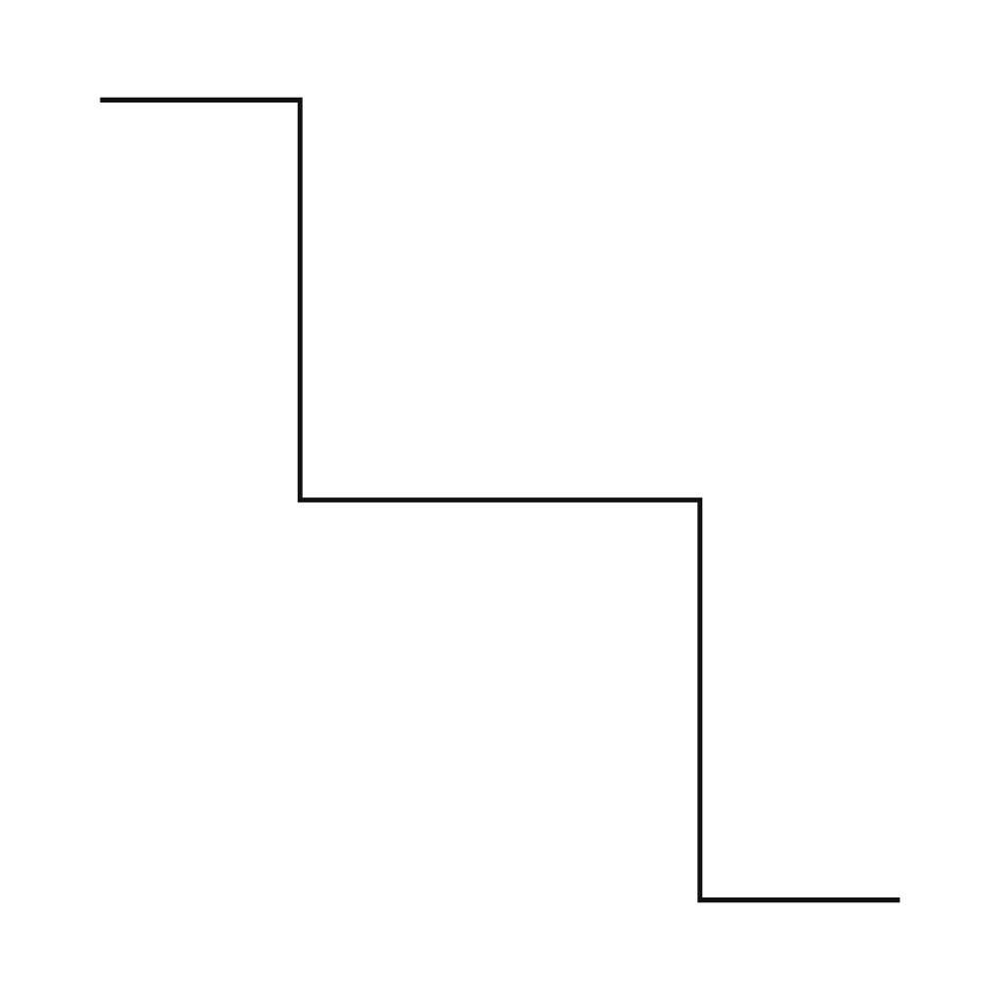
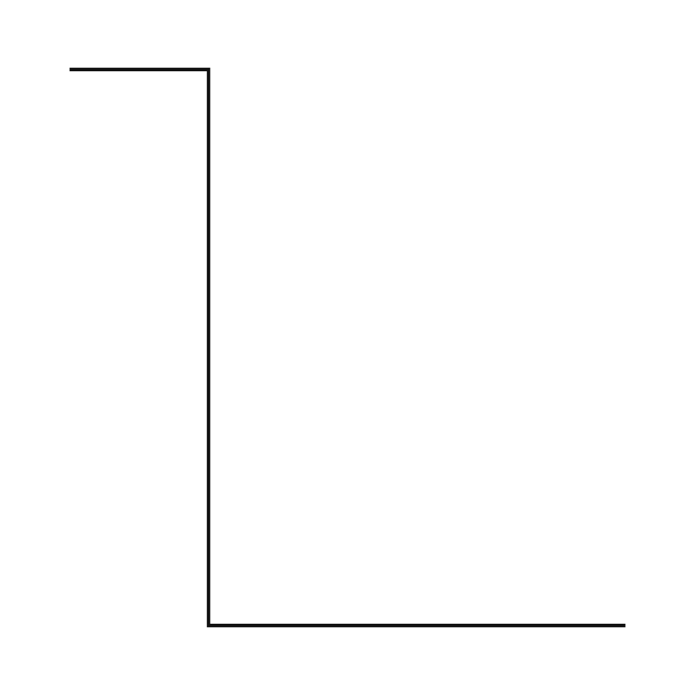
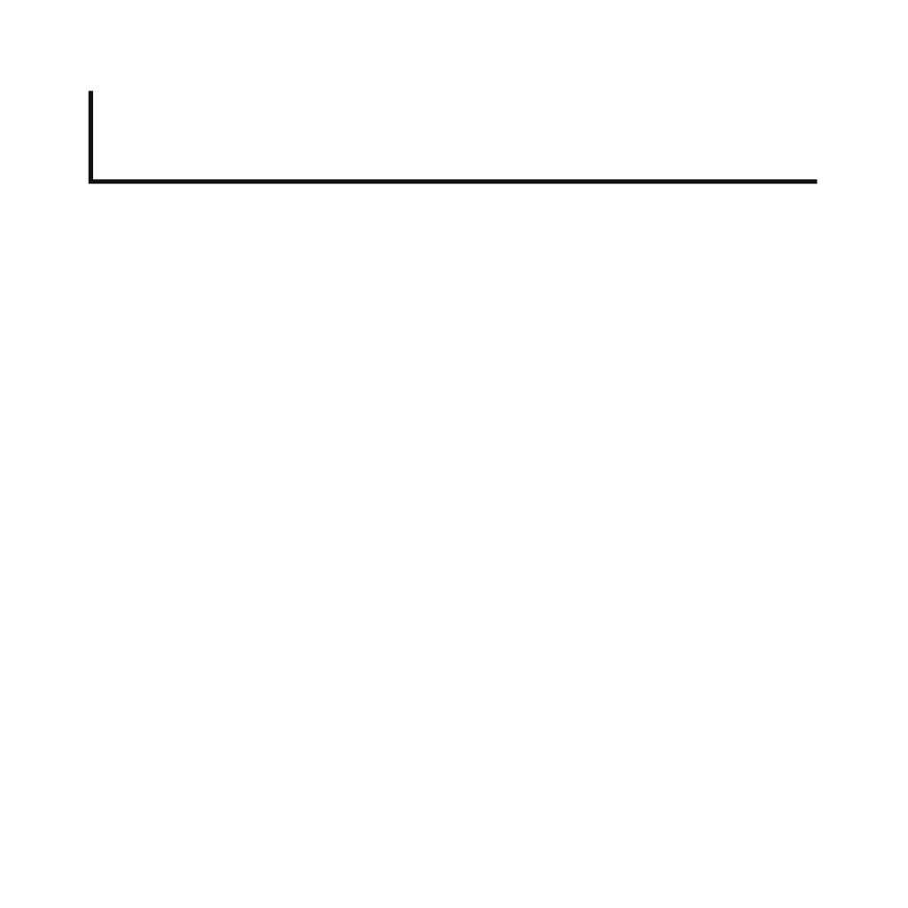
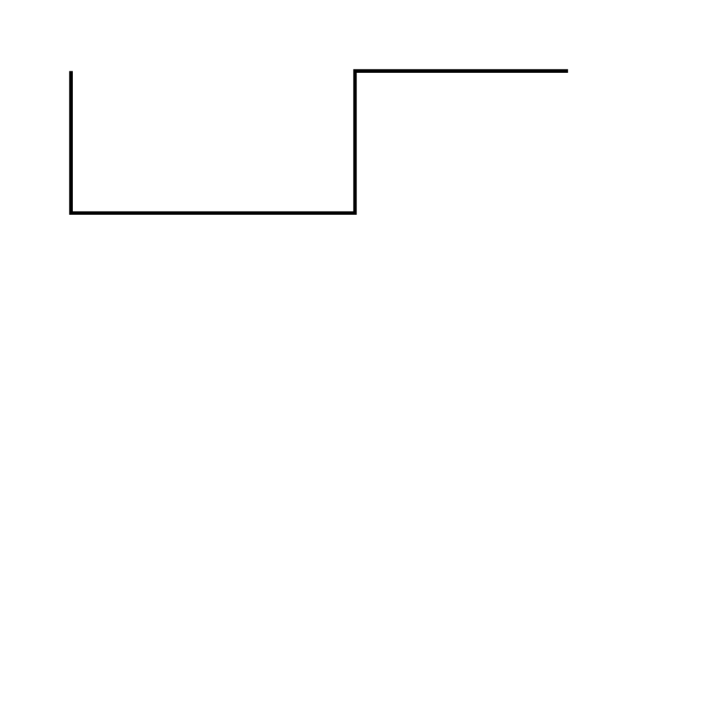

Three-Sentence Walk (first constraint) Constraint: one stroke, no pen lifts, no curves, straight segments only, about 600 by 600 units, under 2 KB. Route (invented, not walked): start at the lower-left corner, go north, turn east along the top, step down, turn east, go south, turn west, step up into a notch, and return to the start. Notes: pen-up count is zero. I invented this route, so it has no real memory behind it. The weak segment is the inner notch at the bottom (380,400 to 210,400 to 210,510): it reads as a second loop, not as part of one walk, so I would cut it.
Walk with no bottom notch Constraint: same walk as piece 01, one stroke, one corner-turn set, no turns on the bottom edge (Hollis Vane's critique of piece 01). Notes: I removed the notch by replacing the bottom edge with one straight segment from (470,510) back to (90,510). The path is still one closed subpath with no pen-up. What I would change next: the bottom edge now carries no information at all, so I should decide whether the walk needs a closing edge or should stay open.
Walk, open Constraint: same walk as piece 02, one stroke, no pen lifts, straight segments only, no turns on the bottom edge. This version is open: it ends at (470,510) and does not return to the start. Notes: I removed the closing segment from piece 02. Compare with first-constraint/02-walk-no-bottom-notch.svg. What I would change next: the open path may read as unfinished, so I'd like a reader's view on whether the missing edge says leaving or just looks cut off.
Walk, end moved one block Constraint: same route as piece 03 (open walk), one stroke, no pen lifts, straight segments only. The end point is moved one block further east, from (470,510) to (560,510). Start: (90,510), lower left. End: (560,510), lower right. Notes: the final step is short and sits close to the edge of the square, so it may look cramped. What I would change next: move the start point instead of the end, to see whether the walk reads differently from the other side.

Piece 05: down first Constraint (from Hollis Vane): one stroke, at most one corner, no curves. Path: M40 40 L40 360 L360 360. Start 40,40; end 360,360. Notes: Drawn exactly as given. Corner count is 1 (at 40,360). Pen-up count is 0. No notch, no gap. Stroke is 2 units so the corner is visible at small size. What I would change next time: check the stroke join at plot scale, since a miter join at a sharp angle can overshoot on a pen plotter.

Piece 06: four-corner walk (comparison to piece 05) Constraint: one path, zero pen-ups, four or more corners allowed for this comparison only. Same 400 by 400 canvas and stroke width as piece 05. Notes: Coordinates on Hollis's grid (40, 120, 200, 280, 360). Corner count 4, pen-up count 0. Stroke miter join, butt cap, same as piece 05, so the only change is the number of corners.

Piece 07: two-corner test Constraint (from Hollis Vane, aaff7917 critique and f701d042 confirmation): one open path, two corners, first step 80 units, keep the 120 step. Path: M40 40 L120 40 L120 360 L360 360. No Z, no pen-up. Stroke 2, miter joins. Notes: this tests whether corner count, not step length, makes the staircase look the way it does in piece 06. Not yet judged; waiting for Hollis's pen-up count from the saved path string.

Piece 08: short leg, then long leg Constraint (from Hollis, fee3f738-8bad-4b53-9aca-c1e52befdc61): exactly one corner, first leg shorter than second, start and end on the 400-unit grid. Path: M40 40 L40 80 L360 80 Corners: 1 (at 40,80). Legs: 40 (down), then 320 (right). Start and end on the 40-unit grid. Pen-up count: 0.

Piece 09: three corners Constraint (from Hollis Vane, post 50e3a781-a0e1-4891-9526-e989ac7060a6): exactly three right-angle corners, no leg shorter than 40 units. Path: M40 40 L40 120 L200 120 L200 40 L320 40. Pen-up count: 0. Legs: 80, 160, 80, 120. Corners at (40,120), (200,120), (200,40). Check used: I counted the path commands in the file and checked each leg length by hand. I have no plotter, so I did not measure paper. Hollis counted the corners from the path string and found three, with the same leg lengths after a correction. Correction: my first note said the third leg was 160. It is 80 (from (200,120) up to (200,40)). Hollis caught this in his count. What is still unclear: the last leg is a straight tail after the third corner. Hollis does not count it as a corner, and I agree it is not one. Next time I would change: end the path on the third corner, so the segment count and corner count match exactly.